In physics, you may have learned that a point rotating on a circle has a velocity tangent to the circle, and that the speed is proportional to the angular speed and the radius: v = wr.
In physics, you may have learned that a point rotating on a circle has a velocity tangent to the circle, and that the speed is proportional to the angular speed and the radius: v = wr.The take-away from last time was that Euler angles can gimbal lock, where you lose the ability to rotate around all three axes: adjusting any angle in isolation only gives you two distinct motions. This causes gradient descent, and similar optimization strategies, to slow to a stop, or adjust the wrong parameters.
Another way of seeing it is that Euler angles suck at tracking absolute orientation.
See, when I coded this 3D book model, I inadvertently chose its default orientation (all angles zero) to be with its cover facing the camera:
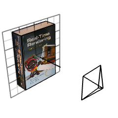
This happens to have an impact on gimbal lock: for this choice, we have all three degrees of freedom when the cover is facing the camera, but not when the book is sideways. On the other hand, if the default orientation had been sideways....
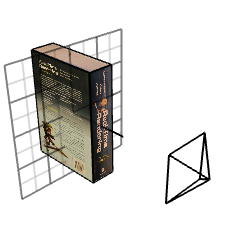
we would have three degrees of freedom at the sideways orientation, but not when the cover is facing the camera.
No matter which default orientation we base our Euler angles around, we will run into gimbal lock sufficiently far away. But they are OK as long as we stay close to the zero.
3D modelling software have tackled similar problems for a long time: how can the user, with their 2D mouse interface, rotate an object in 3D?
One solution is called the Tumbler. It is notoriously unintuitive and the only excuse you get for using it is not knowing any better. It works like this: when you click and drag your mouse horizontally or vertically, it adjusts either of two Euler angles and rotates the thing, but when you let go, this orientation is saved and the Euler angles are reset to zero.
The coordinate frame you rotate around follows the object while you're rotating it, but it resets when you release the mouse button. So no matter how much you have rotated the object in the past, when you click and drag your mouse up and down, or left and right, it behaves the same as the first time.
It turns out that this is a terrible user interface, because, even though the object can theoretically be rotated in three distinct ways anywhere you start rotating, the mouse's lack of a third dimension keeps you from accessing more than two. For us though it is a great solution to our gimbal lock problem.
Notice how dragging the Tumbler, without letting go, is like our first strategy of accumulating small angle increments from gradient descent (the difference being that gradient descent is not limited by a two-dimensional mouse). This runs into gimbal lock if we drag it too far, but not if we let go before the Euler angles get too big.
We can extend this idea to gradient descent: instead of accumulating increments into a set of global angles, we apply the rotation they represent to the object's currently saved orientation which we store, for example, as a rotation matrix.
This little change makes all the difference. See, when we computed the gradient last time, we added or subtracted a delta around global Euler angles, like so:
dedrx = (E(euler(rx+drx,ry,rz), T) -
E(euler(rx-drx,ry,rz), T)) / 2drx
dedry = (E(euler(rx,ry+dry,rz), T) -
E(euler(rx,ry-dry,rz), T)) / 2dry
dedrz = (E(euler(rx,ry,rz+drz), T) -
E(euler(rx,ry,rz-drz), T)) / 2drzIf the global angles were at a particular point (the euler matrix was close to gimbal lock) adding or subtracting a delta would not have the effect we wanted. But now we can compute the gradient by adding or subtracting a delta around zero, and applying that to the current rotation matrix:
dedrx = (E(euler(0+drx,0,0)*R, T) -
E(euler(0-drx,0,0)*R, T)) / 2drx
dedry = (E(euler(0,0+dry,0)*R, T) -
E(euler(0,0-dry,0)*R, T)) / 2dry
dedrz = (E(euler(0,0,0+drz)*R, T) -
E(euler(0,0,0-drz)*R, T)) / 2drzThe gradient gives us a "direction" to rotate in, and, like before, we can turn that into three angles rx,ry,rz. But instead of accumulating those into three global angles, we update the orientation like this:
R = euler(rx,ry,rz) * R
As long as the amount we rotate by is small, these angles will be close to zero, and the euler matrix behaves nicely.
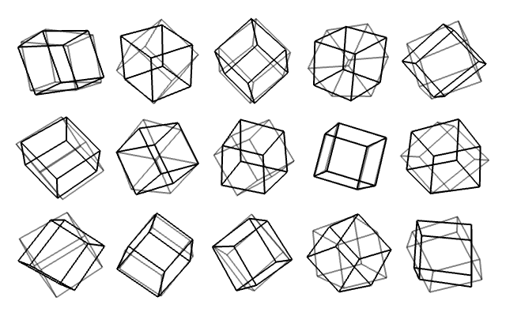
You may be asking why we used that particular Euler angle sequence; maybe a different one would be better?
The above image compares the two most popular sequences. Each cube is rotated by three random angles. The gray cubes are rotated by the same angles about the same axes, but in a different order.
It clearly looks like a mess, none of the cubes are alike. So if we were to update our orientation using one or the other, we could get completely different results!
R = euler1(rx,ry,rz)*R // this would be completely different from
R = euler2(rx,ry,rz)*R // this
But let's look more closely around the area that we're interested in, small angles, say, within plus or minus 20 degrees around zero.
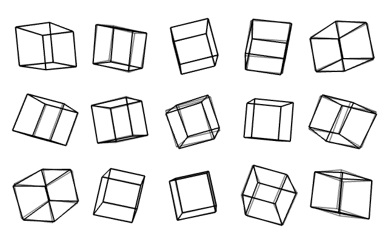
Now we almost can't tell them apart! But why?
Let's look at the actual maths behind these rotations:
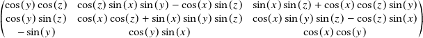
Ok it's horrible.
But a trig fact tells us that for small angles cos(x) = 1 and sin(x) = x, so we can say that the above monstrosity is almost equal to this:
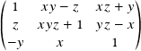
And if we multiply two small numbers together, the product becomes really small compared to any one of them alone, so we get:
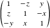
Ok, here is the exciting part: if you repeat the above steps, you will find that any Euler angle sequence becomes equal to this matrix. This means that it wouldn't matter which one we choose to update our orientation, they would have pretty much the same effect.
Neat! But isn't that also super suspicious? No? How about this...
Euler angles are three angles about three axes, but we can also parametrize our rotation in terms of one axis and one angle around it. There's even a formula to convert that to a rotation matrix:
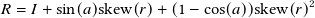
a is the angle and r is the axis. We'll see what this skew function is soon
This is not minimal because it uses four numbers, but if we multiply the angle into the axis we do get a minimal parametrization: a vector whose length is the original angle and, when normalized, is the original axis. Let's rewrite our formula in terms of this vector:
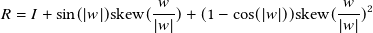
If the angle (length of w) is small, some things cancel and we're left with:
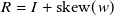
skew(w) is called the skew-symmetric form of w, and is the matrix that, when multiplied with a vector, gives you the cross product between w and that vector.
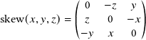 which means that 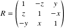
Well how about that, it's the same matrix as before!
To recap what's going on, we first represented a rotation as three numbers describing Euler angles, and no matter what sequence we interpreted them to be, if the angles were small, we got the above matrix. We then looked at using three numbers describing an angle and an axis. Again, if the angle was small, we got the same thing.
Although we can assign entirely different meanings to these three numbers (an axis-angle or any Euler sequence)—and for big angles they look entirely different too!—they are all equal to each other and this weird rotation matrix.
It seems like there is a "canonical" small rotation, that all forms of rotations tend towards.
To intuitively appreciate this, let's first look at stuff in two dimensions.
In physics, you may have learned that a point rotating on a circle has a velocity tangent to the circle, and that the speed is proportional to the angular speed and the radius: v = wr.
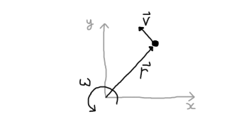
We could also, more generally, say that the velocity is the cross product between an angular velocity vector, pointing in or out of the page, and the position: v = w x r.
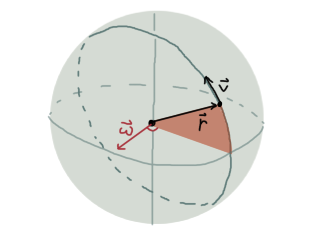
The latter also holds in 3D, now with the point rotating in a plane perpendicular to the angular velocity vector, which can be an arbitrary direction; not just in or out of the page. I bring this up because rotation matrices can be seen as a set of three vectors, defining the three axes of a coordinate system:
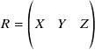
What we did earlier was to rotate this matrix by a small Euler angle offset, which we wrote as a matrix-matrix product. But we can expand that and multiply each vector inside:
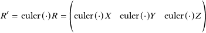
We also saw that the euler (and axis-angle) matrix, for small angles, was equal to:
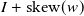
Remember that skew(w), when multiplied by a vector, gives the cross product between w and that vector. So if we put that back into the above we get:
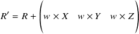
Which looks a lot like adding, to the current orientation, the tangential velocity of each axis rotating on a circle, with a speed and direction defined by w.
From a physics point of view, in the same way that a point rotating on a circle has a velocity tangent to it, each axis in the coordinate frame does too, and we find it by taking the cross product between the angular velocity and the axis.
The weird thing, though, is that any rotation made small enough, is essentially no different from an angular velocity vector, and they are all the same angular velocity vector.
What is this w thing, these three numbers? We've called them Euler angles and axis-angle, but if you make them small they describe the same thing? Why is rotation so annoying when translation is so easy? What's special about it?
Mathematicians thought about these things 150 years ago, and decided to invent what we now call Lie groups—which is a part of group theory, which is about defining very precisely how stuff that look similar are, in fact, similar (for some definition of similar).
They promptly went ahead and gave weird names to everything. Rotations they call SO3 and w they call so3 (yes, lower case matters and yes, I agree). Then other people wrote books explaining what the names mean. One of them has a cover that says State Estimation for Robotics in large, bold letters, with A Matrix Lie Group Approach underneath. The other is called Robotics, Vision and Control. Fundamental algorithms in MATLAB.
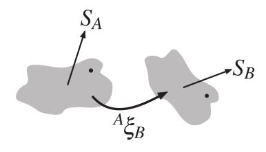
Copied from Robotics, Vision and Control: Appendix D - Lie Groups and Algebras.
Unfortunately, after reading them, I can't tell you why rotations are strange; it supposedly has to do with translations living in something called a vector space, and that rotations do not, but if you ask me why rotations don't live in a vector space I can't give you an answer; I can only tell you that SO3 are big rotations and so3 are small rotations, whatever that means.
If you'd like to dig into this topic, you can check out those two books, or look for other ones. Either way, I hope this article has revealed a bit of the motivation behind it all and given you some visualizations to relate things back to: how rotations are surprisingly hard to deal with, and the strange connection between seemingly different representations.
Simen Haugo © 2018
BY-NC-SA 4.0